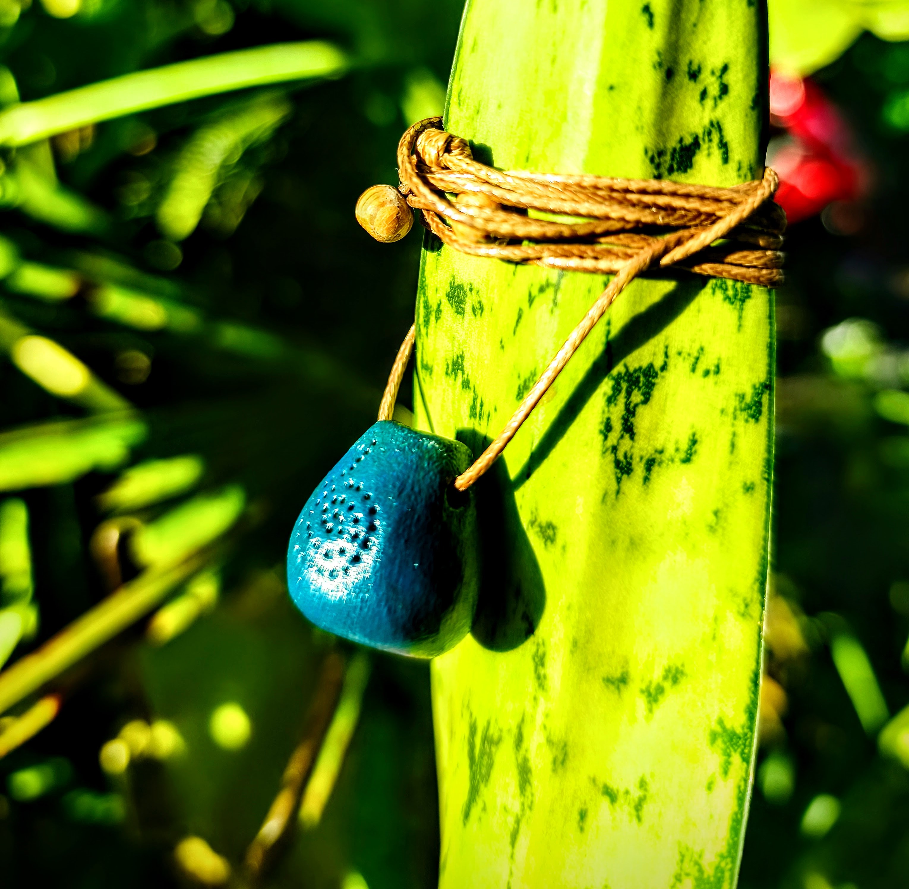

✦ toque para ampliar
✦ Pingente Cerâmico Artesanal ✦


Difusor Pessoal de Aromaterapia — Pingente Cerâmico Artesanal
R$ 39,90
Carregar o aroma das plantas junto ao corpo é uma forma antiga de cuidado — um ritual sutil que atua onde nem sempre as palavras alcançam: no sentir.
Este difusor pessoal nasce da união entre a terra e o sopro da vida. Moldado à mão em cerâmica artesanal, ele carrega em sua forma a simplicidade do natural e a potência invisível dos elementos.
Pequeno em tamanho, profundo em presença — um guardião silencioso do seu equilíbrio diário.
